APARTAT 01
Instal·lació d'un SO
1. Crear una màquina virtual
Per crear una màquina virtual, haurem de prémer el botó blau «Nueva», situat a la part dreta de VirtualBox.
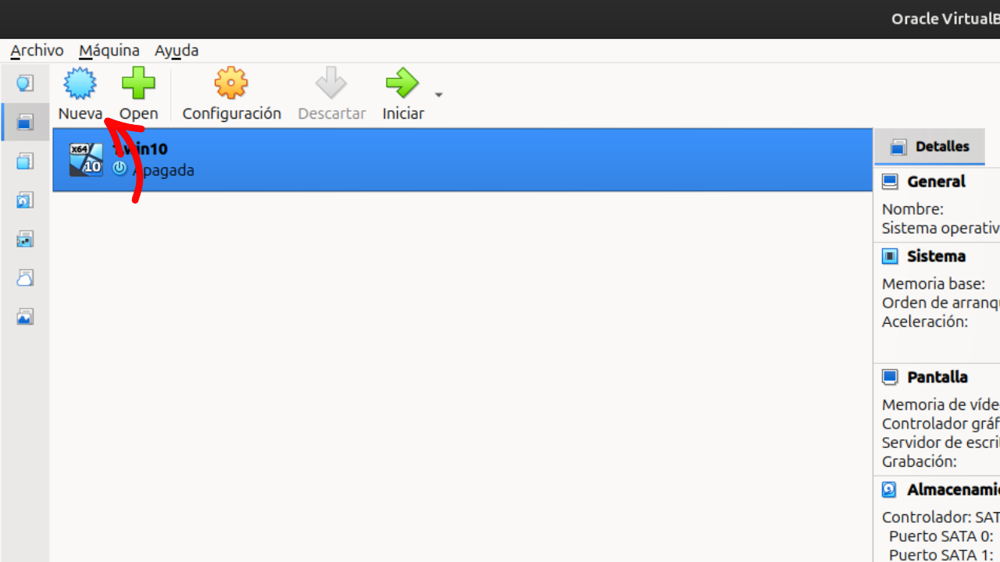
2. Configurar el nom i la ISO
Un cop dins de la configuració de la màquina virtual, haurem d'introduir el nom que volem assignar-li i seleccionar la ISO d'instal·lació d'Ubuntu.
La ISO haurà d'estar descarregada prèviament i la podrem seleccionar des de la ubicació on l'hàgim desat.
Un cop seleccionada, VirtualBox identificarà automàticament la versió del sistema operatiu. En aquest punt, és important desmarcar l'opció indicada a la captura.
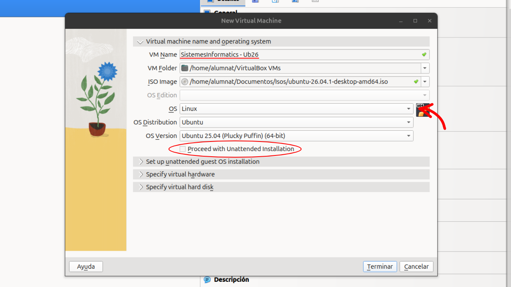
3. Assignar la memòria i els processadors
A continuació, seleccionarem «Specify virtual hardware».
Assignarem a la màquina virtual:
- 4 GB de memòria RAM
- 2 processadors (CPU)
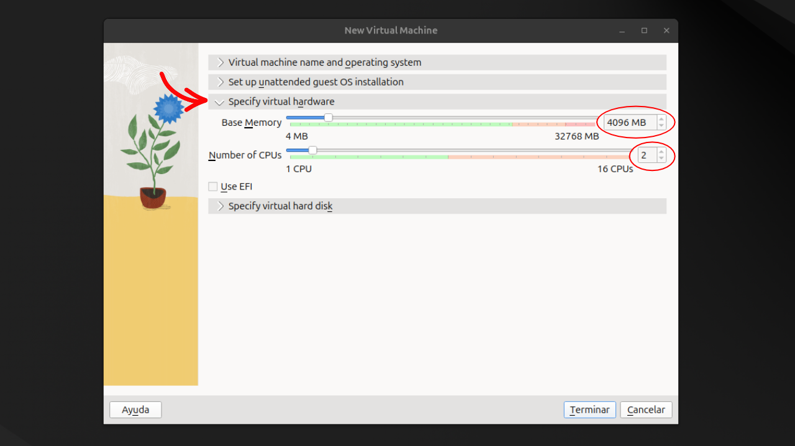
4. Crear el disc dur virtual
Accedirem a «Specify virtual hard disk» i assignarem 50 GB d'espai al disc virtual.
Aquest espai serà dinàmic, és a dir, la màquina virtual no ocuparà els 50 GB immediatament, sinó que anirà utilitzant espai a mesura que el necessiti.
Un cop configurat, podrem prémer «Terminar».
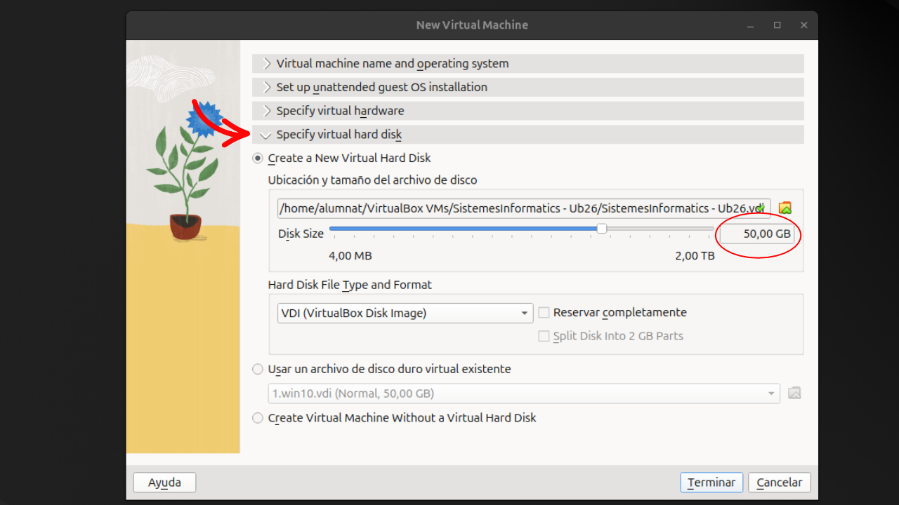
5. Iniciar la instal·lació d'Ubuntu
Quan la màquina virtual s'hagi creat, iniciarem el procés d'instal·lació i seleccionarem l'opció «Try or Install Ubuntu».
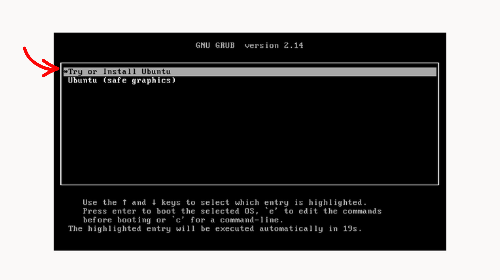
6. Configuració inicial d'Ubuntu
Durant la configuració inicial, podrem seleccionar les opcions segons les nostres preferències fins arribar a l'apartat «¿Qué quieres hacer con Ubuntu?».
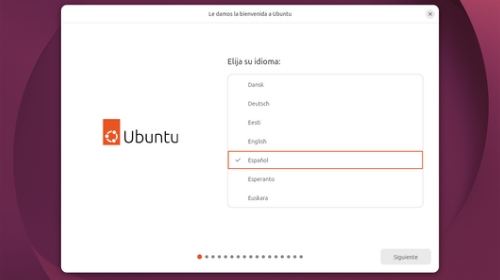
7. Iniciar la instal·lació
En aquest apartat seleccionarem l'opció «Instalar Ubuntu».
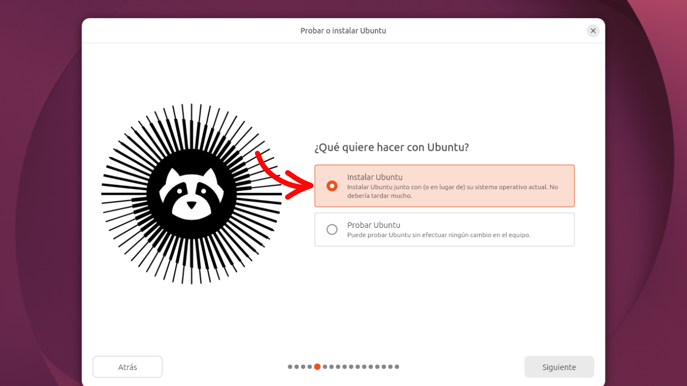
8. Seleccionar el tipus d'instal·lació
A continuació, seleccionarem l'opció «Instal·lació interactiva».
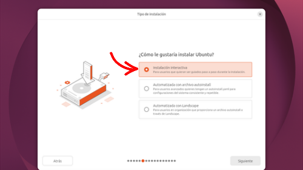
9. Seleccionar la instal·lació manual
En el següent apartat, seleccionarem l'opció «Instal·lació manual», ja que volem configurar les particions del sistema manualment.
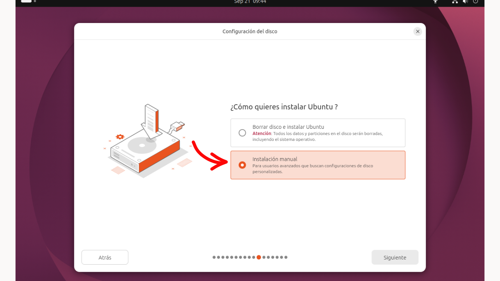
10. Configurar les particions
Ara configurarem manualment les particions del sistema operatiu. Per crear-les, haurem de prémer el botó «+».
Les particions es configuraran de la següent manera:
| Espai | Punt de muntatge | Format |
|---|---|---|
| 8 GB | Swap | Swap |
| 12 GB | /home | Ext4 |
| Espai restant | / | Ext4 |
La partició Swap s'utilitzarà com a espai d'intercanvi, mentre que /home serà on es guardarà la informació dels usuaris. L'espai restant es destinarà a la partició arrel del sistema, representada pel punt de muntatge /.
Un cop creades totes les particions, seleccionarem «Siguiente».
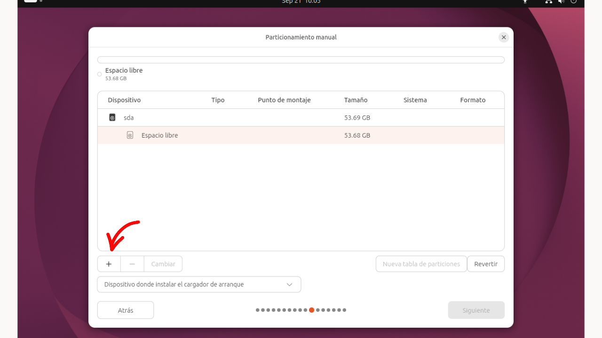
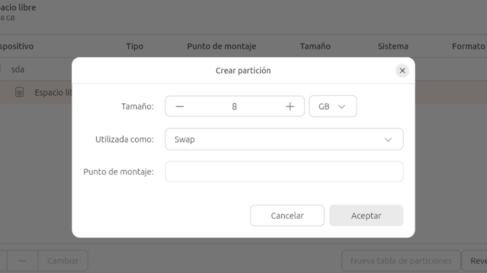
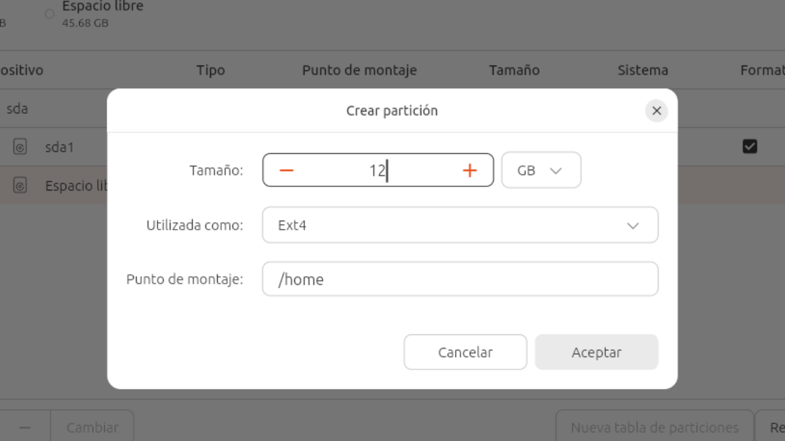
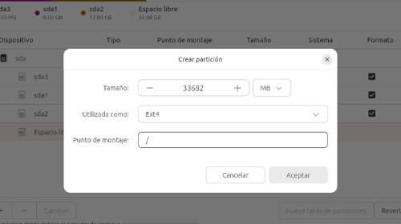
11. Crear el compte d'usuari
A continuació, crearem el nostre compte d'usuari i continuarem amb la configuració fins arribar a la pantalla de finalització de la instal·lació.
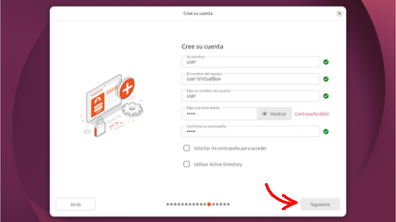
12. Reiniciar Ubuntu
Quan la instal·lació hagi finalitzat, seleccionarem «Reiniciar Ubuntu» per reiniciar la màquina virtual.
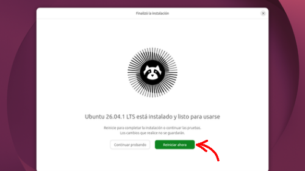
13. Instal·lació finalitzada
Un cop reiniciada la màquina virtual, ja tindrem Ubuntu instal·lat i funcionant dins de VirtualBox.
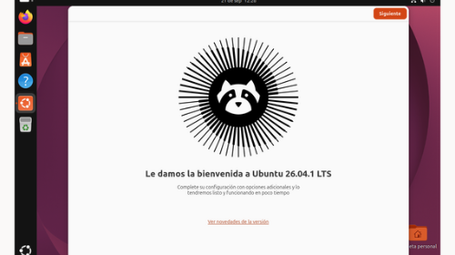
APARTAT 02
Punts de restauració
En aquest apartat es documentaran els procediments relacionats amb els punts de restauració del sistema.
Contingut pendent de realitzar.
↑ Tornar a l'índexAPARTAT 03
Particions
En aquest apartat es documentarà la gestió i configuració de particions del sistema operatiu.
Contingut pendent de realitzar.
↑ Tornar a l'índexAPARTAT 04
Virtualització
En aquest apartat es documentaran els conceptes i procediments relacionats amb la virtualització.
Contingut pendent de realitzar.
↑ Tornar a l'índexAPARTAT 05
Gestor d'arrencada
En aquest apartat es documentarà el funcionament i la configuració del gestor d'arrencada.
Contingut pendent de realitzar.
↑ Tornar a l'índexAPARTAT 06
Xarxa bàsica
En aquest apartat es documentaran les configuracions i comprovacions bàsiques de xarxa.
Contingut pendent de realitzar.
↑ Tornar a l'índexAPARTAT 07
Comandes generals
En aquest apartat es documentaran les principals comandes generals utilitzades en Ubuntu.
Contingut pendent de realitzar.
↑ Tornar a l'índexAPARTAT 08
Instal·lació d'aplicacions
En aquest apartat es documentarà el procés d'instal·lació d'aplicacions en Ubuntu.
Contingut pendent de realitzar.
↑ Tornar a l'índex